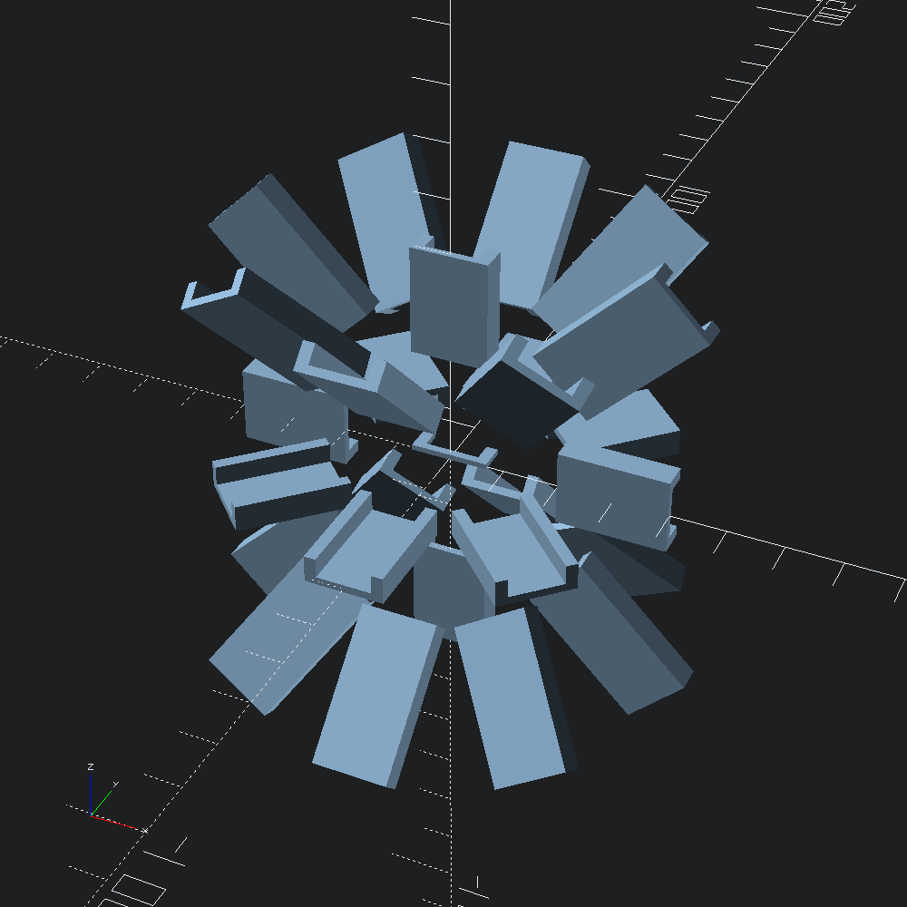
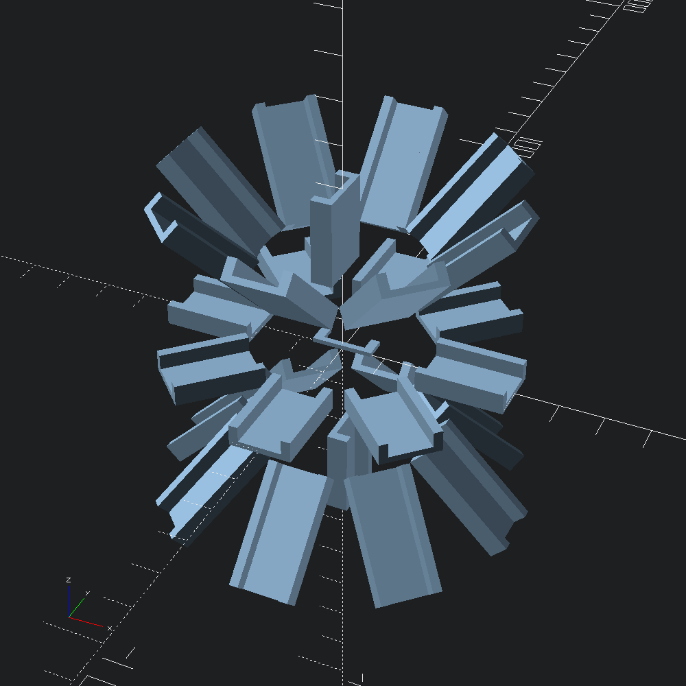
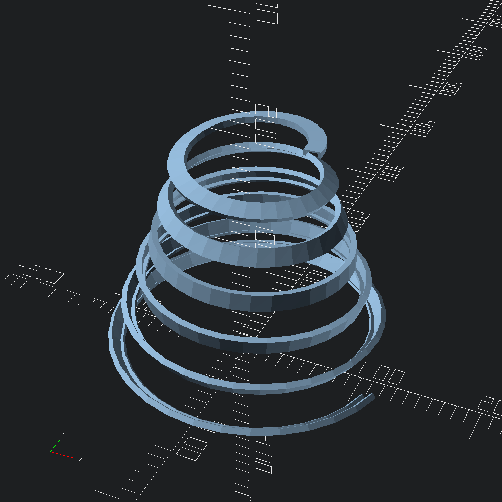
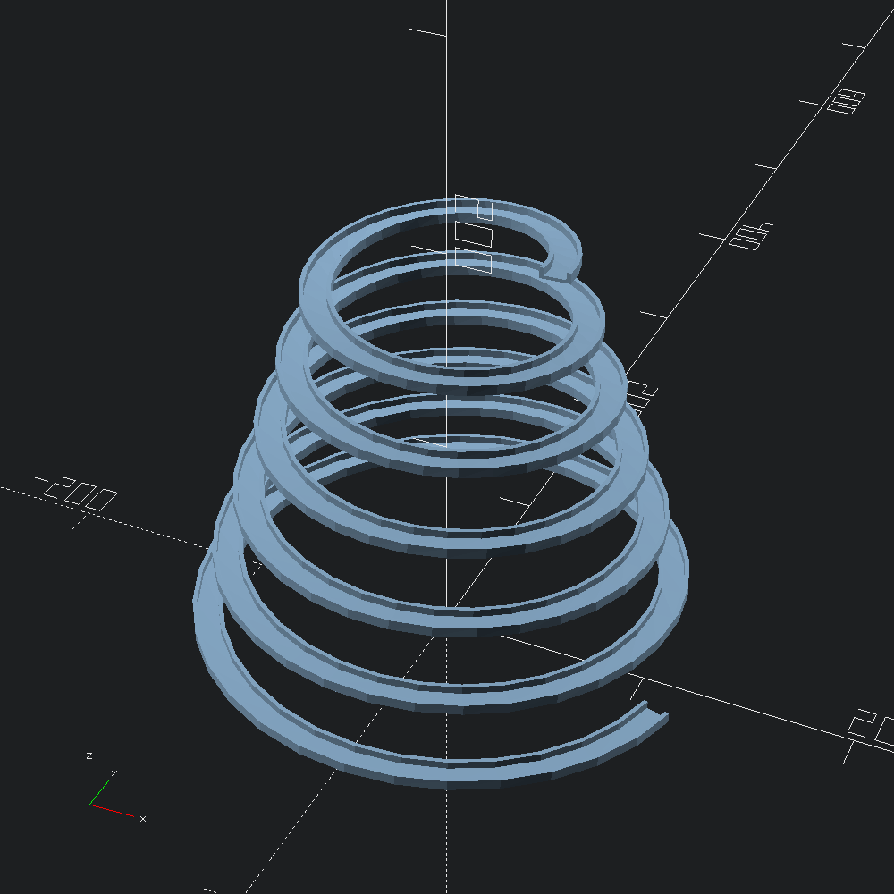

open OCADml
open OSCADmlWe'll use a simple elbow shape for our sweeps so that its orientation is easily discernible along the path.
let poly =
[ -10., -1.; -10., 6.; -7., 6.; -7., 1.; 7., 1.; 7., 6.; 10., 6.; 10., -1. ]
|> Path2.of_tups
|> Path2.scale (v2 0.7 0.7)
|> Poly2.makePaths radiating outwards from the origin, angled with 45° steps.
let paths =
let d = 20.
and p s = V3.[ v (x s) (y s) (z s); v3 (x s *. 2.) (y s *. 2.) (z s *. 2.) ] in
let out = [ v3 d 0. 0.; v3 d 0. d; v3 d 0. (-.d) ] in
let f i = List.map (fun s -> V3.rotate (v3 0. 0. Float.(pi /. 4. *. i)) s |> p) out in
p (v3 0. 0. d) :: p (v3 0. 0. (-.d)) :: List.concat_map f (List.init 8 Float.of_int)Original orientation of the shape poly for reference.
let flat = Scad.extrude ~height:1. (Scad.of_poly2 poly)Extrude poly along each of the generated paths, using either default/standard, or euler path transformations (see Path3.to_transforms).
let starburst ~euler =
let scad =
let f path = Scad.of_mesh @@ Mesh.path_extrude ~euler ~path poly in
Scad.union @@ (flat :: List.map f paths)
and name =
Printf.sprintf "sweep_starburst_%s.scad" (if euler then "euler" else "default")
in
Scad.to_file name scadNote that with the default (non-euler) path transformations, the orienation of the polygon on the xy plane relative to the starting tangent of te path determines the starting orientation of the sweep. This is in contrast to to when euler is true, where there is radial symmetetry around the z-axis.
let () = starburst ~euler:false (* default path transformations *)
let () = starburst ~euler:true (* euler path transformations *)
A conical path that will reveal to us some of the quirks of the default (non-euler) transformations calculated by Path3.to_transforms.
let path =
let step = 0.005 in
let f i =
let t = Float.of_int i *. step in
let x = ((t /. 1.5) +. 0.5) *. 100. *. Float.cos (6. *. 360. *. t *. Float.pi /. 180.)
and y = ((t /. 1.5) +. 0.5) *. 100. *. Float.sin (6. *. 360. *. t *. Float.pi /. 180.)
and z = 200. *. (1. -. t) in
v3 x y z
in
List.init (Int.of_float (1. /. step)) fHere, much like in the example in the sweep example of the OpenSCAD list-comprehension-demos library, we can see the accumulated twisting introduced by the default interpretation of the paths tangents.
let () =
Scad.to_file "sweep_path_default.scad" (Scad.of_mesh @@ Mesh.path_extrude ~path poly)
In some scenarios, you may find the result when euler is true to be more intuitive, as it is here (more closely resembling the special cased Mesh.helix_extrude in this case).
let () =
Scad.to_file
"sweep_path_euler.scad"
(Scad.of_mesh @@ Mesh.path_extrude ~euler:true ~path poly)